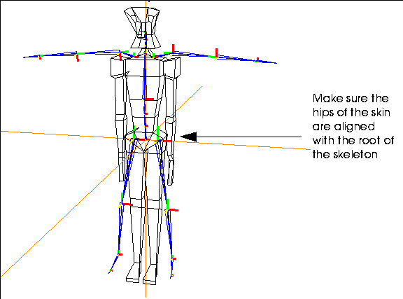

[N-World Contents] [Book Contents] [Prev] [Next] [Index]
Editing Motion Capture Data
This chapter describes several techniques for modifying motion capture data, including methods for layering artist specified motion, decomposing motion capture data into rotational components or poses, and blending poses into motion capture. It also describes how to use the Motion Transform command to use the same motion data on skeletons of different sizes and proportions.
In this Chapter
You'll learn how to:
Layering Artist's Motion with
Motion Capture Data
Now that you have a basic script, let's show how you can layer other skeletal operations over existing motion capture data.
Suppose, for example, that you were animating a character using a motion capture file for a "run." You may have gone to a motion capture facility, captured a good run cycle, and applied it to your skeleton; however, you decide later that it would have been nice if you could make the character wave his arms, turn his head, or reach out for an object as he passes by. What do you do then?
Rather than recapturing an entire motion sequence, you could layer artist created motions using the Skeletal Animation System to add these "secondary" motions to the captured motion data.
Layering Rotations with
Motion Capture
You can "layer" simple bone rotation or bone scale operations over motion capture data so that both are used to update the skeleton's position over time.
Try this:
1. Load the following script:
/usr/local/ngc/demo/scripts/layer-mc-and-rotations
- In this script, we'll use motion capture data from Acclaim to animate the skeleton.
- This script has four channels:
The script should look something like this:
Figure 10.1 A script layering artist motion with motion capture data
2. (CLICK-L) on the Animate button in the N-Dynamics window.
- The skeleton walks forward toward the camera, with no extra movements of any kind.
3. Move the mouse over the "Layered Bone Rotations" channel and press "a" on the keyboard.
- This makes the channel active. Note that the text changes from black to white (text color indicates the active status of the channel).
4. (CLICK-L) on the Animate button to reanimate the skeleton.
- Note that this time, the skeleton lifts its arms as it walks; this motion was layered on top of the motion capture data read in by the Read Acclaim Data channel.
Layering Motion
Let's take a look at how we layered our own motion on top of the "canned" motion capture data.
5. (CLICK-L) on the Layered Bone Rotations channel.
- This opens the parent channel so that you can see the subchannels it contains.
Figure 10.2 Rotations nested inside a parent channel
- In this script, we created channels that added rotation to both the left upper arm and the right upper arm.
6. (CLICK-L) on the first subchannel (Z Rotate Bone: h_left_up_arm).
- The black triangle in the upper right corner of the channel tells you that the channel contains addition subchannels which are not currently visible.
Figure 10.3 Curve channel associated with Rotate Bone operation
- The two vertical lines in the channel are "cues," which are described in more detail in the N-Dynamics Reference Guide. They represent a value for the rotation operation at a specific point in time.
7. (CLICK-L) on the curve channel.
- The curve data looks like this:
Figure 10.4 Curve data for the bone rotation
8. (CLICK-M) on the cue to see its value.
- A dialog box shows the current value for the selected cue (at frame 16):
Figure 10.5 Rotations nested inside a parent channel
- As described in the Skeletal Animation System Reference Guide, all the modifications made to a skeleton (including applied motion capture and rotations) are additive. This means at frame 16, 112 degrees will be added to the Z rotation of the left upper arm.
- Try this:
9. Deactivate the Layered Bone Rotations channel.
- Move the cursor over the channel and press "a".
10. (CLICK-L) on the time line at frame 16.
- The skeleton should look something like this:
Figure 10.6 Unmodified walk cycle at frame 16
11. Reactivate the Layered Bone Rotations channel.
- Move the cursor over the channel and press "a".
12. (CLICK-L) on frame 16 on the time line again.
- The skeleton should now have his left arm raised:
Figure 10.7 Walk cycle at frame 16 with layered bone rotations
Things to Remember about Layering Motion
Layering IK Moves with
Motion Capture
In the same way that you layer simple bone rotation or bone scale operations over motion capture data, you can layer inverse kinematic operations.
In this script, we make the skeleton reach out for a panel as it walks by. You could use a script like this, for example, to make a character running down a hallway reach out for some object as it walks past.
Try this:
1. Load the following script:
/usr/local/ngc/demo/scripts/layer-mc-and-IK
- In this script, we'll use motion capture data from Acclaim to animate the skeleton.
- This script has four channels:
The script should look something like this:
Figure 10.8 A script layering an IK move with motion capture data
2. (CLICK-L) on the Animate button in the N-Dynamics window.
- You'll see the skeleton and the small panel in the N-Geometry window, but as the skeleton goes by, he does nothing. We want the skeleton to reach out for the panel.
3. Move the mouse over the "IK Move to Object" channel and press "a" on the keyboard.
- This makes the channel active. Note that the text changes from black to white (text color indicates the active status of the channel).
4. (CLICK-L) on the Animate button to reanimate the skeleton.
- Note that this time, the skeleton reaches out for the panel; this IK move was layered on top of the motion capture data read in by the Read Acclaim Data channel.
- Note. The IK Move to Object operation should come after the Update Skeleton operation.
5. (CLICK-M) on the IK Move to Object channel.
- In the channel, you specify the bone to move (in this case, the left hand), the DOF set used to complete the IK move, and the target object you are reaching for.
Figure 10.9 Specify both the bone, DOF set, and target in the operation
- Close the channel when you're done.
6. (CLICK-L) on the curve channel under the IK Move to Object channel, then (CLICK-L) again on the curve channel beneath it.
- We used a linear curve with two cues:
Figure 10.10 Sample curve for the IK Move to Object operation
- if you (CLICK-M) on the first cue, you can see that its value is 1.0.
Figure 10.11 Editing a cue value
- This cue is located at frame 33. This means that at frame 33, the specified bone will have moved all the way to the specified object in the script.
- The second cue in the script (the one at frame 76) is set to a value of 0. From this point until the end of the script, the IK Move to Object operation has no more effect (since the operation has a value of 0.
You can layer any number of IK Move to Object operations on top of motion capture. You may, for example, want the character to reach for a gun on a table, then reach for a drawer that he/she will open.
As noted before, remember that any IK operations should come after the Update Skeleton operation in your script.
Copying Motion Data between Skeletons
This section describes N-Geometry's Motion Transform function. This operation lets you transform the motion capture data captured for one skeleton so that it can be used to animate a second skeleton.
- Note. Because motion capture data is bone-name dependent, you should only use this operation to copy motion data between skeletons from the same vendor.
1. Read in the skeleton for the motion capture file you want to animate.
Figure 10.12 Read in the skeleton from the motion capture file you want to animate
2. Read in the skin you want to animate.
3. Align the hips of the skin with the root of the skeleton.

Figure 10.13 Move the skin so that its hips are aligned with the skeleton's root
4. (SHIFT-L) on the skin, then (CLICK-L) an Make Displacement.
- Make an Absolute displacement on the skin and call it "Base". (This is described in the N-Geometry Reference Guide.)
- Note. Moving the root of the skeleton out of the global origin will likely cause unwanted behavior when interpolating the motion data. If it is necessary to move the skeleton away from global zero, you should do so in a dynamics transform-root channel.)
5. Using N-Geometry's skeletal operations, modify the skeleton so that it fits your skin.
- Use the various rotate and scaling commands, or the pose editor, to match the skeleton to the skin.
Figure 10.14 Align the skeleton with the skin
6. Save a new base state for the modified skeleton.
- (SHIFT-L) on the skeleton, then (CLICK-L) on Base. Use the same name for the base state of the skeleton that you used for the skin in step 4.
Figure 10.15 Save the base state for the skeleton
- (CLICK-L) on the Done button to save the base state.
Now that you have aligned the skin and posed the skeleton to match it, you can perform the motion transform procedure on the altered skeleton.
7. Rename your altered skeleton with a distinct name.
Figure 10.16 Rename the skeleton
At this point, you have two elements in memory:
To complete the transform, you must reread the original skeleton back into N-Geometry:
8. Reread the original skeleton from the motion capture file.
- You should see both skeletons in the N-Geometry window:
Figure 10.17 Original and altered skeleton
9. (SHIFT-L) on the altered skeleton, then (CLICK-L) on Motion Transform.
10. Select the original (unaltered) skeleton from the object list that appears.
- You're next asked if you want to select a bone on which to base the transformation of the translation data.

Figure 10.18 Choosing a bone to compare translation
11. (CLICK-L) on Yes.
12. You're next prompted to select the bone on the altered skeleton that the translations should be based on.
- Note. When doing a Motion Transform, try to keep the bones which are dependent on for the motion transform in close proportion to the same bones on the original skeleton. You can still scale the entire skeleton (e.g., to copy the motion from a man to a dwarf), but don't change the proportion of the bone to the overall skeleton.
For example, if you are doing a walk cycle and do not want any slippage or Y translation, try to keep the bones of the legs in the altered skeleton proportionate to the bones of the legs in the original skeleton. If you need more consistency in the motion of the arms, then keep the upper arm bones proportionate.
In general, avoid using any Scaling operations on just the bone being used on the motion transform.
- Once you've completed the transform:
13. Create an N-Dynamics script with at least two channels:
14. Edit the Read Motion Data channel.
- If you're working with an Acclaim skeleton, use Read Acclaim Data, and complete it like this:
Figure 10.19 Using Acclaim data
Figure 10.20 Using Biovision data
15. Edit the Update Skeleton channel.
- In the Update Skeleton channel, make sure you select the altered skeleton:
Figure 10.21 Select the altered skeleton in the Update Skeleton channel
16. (CLICK-L) on the Animate button to animate your script.
- After testing the motion transform on the new skeleton, you can proceed to skin the skeleton as described in the following chapters.
Notes on Using Motion Transform
- Note. Moving the root of the skeleton out of the global origin will likely cause unwanted behavior when interpolating the motion data. If it is necessary to move the skeleton away from global zero, you should do so in a dynamics transform-root channel.
Decomposing Motion Data
N-Dynamics can be used to decompose motion capture data into its component units:
Typically, this operation is performed on a channel containing one of the following skeletal operations:
As described later on in this section, animation data that has been decomposed into poses can be further decomposed into their rotational components.
Decomposing Motion Data into
Rotational Components
To decompose a motion capture file into its rotational components:
1. Add a channel to your script that reads motion capture data for a skeleton.
2. Specify the skeleton and any motion capture file you want to decompose.
- For an Acclaim skeleton, specify both the .asf and .amc files; for a BioVision skeleton, specify the .bvh file.
3. (CLICK-R) on the channel containing the motion.
- The Action Operations menu appears.
4. (CLICK-L) on the Decompose command.
- The following menu is displayed:
Figure 10.22 Decomposing a motion capture file
5. (CLICK-L) on Separate rotation channels.
- When you choose this option several things occur:
- Open the script to see the rotational components for each bone:
Figure 10.23 Motion capture file decomposed into rotational components
6. Open any of the channels to see the bones included in that channel.

Figure 10.24 Motion capture file decomposed-showing separate bones
- You can continue opening channels until the actual curve data for a given bone is displayed; this curve data can be manipulated just like any other curve data in N-Dynamics:
Figure 10.25 Curve data for decomposed bone rotations
Decomposing Motion Data into Poses
To decompose a motion capture file into a number of poses:
1. Add a channel to your script that reads motion capture data for a skeleton.
2. Specify the skeleton and any motion capture file you want to decompose.
- For an Acclaim skeleton, specify both the .asf and .amc files; for a BioVision skeleton, specify the .bvh file.
3. (CLICK-R) on the channel containing the motion.
- The Action Operations menu appears.
4. (CLICK-L) on the Decompose command.
- The following menu is displayed:

Figure 10.26 Decomposing a motion capture file
5. (CLICK-L) on Pose to pose.
- The following dialog box appears:
Figure 10.27 Specify the number of frames between poses
6. Enter the number of frames between each pose.
- When you choose this option, several things occur:
- Note. The values shown for the cues are "dummy" values (as described in the Animate Pose to Pose operation). The peaks and valleys are created only to make it easier to see each cue.
- Open the script to see the cues that are inserted for each pose:
Figure 10.28 Motion capture file decomposed into poses
Decompose Motion Data from Pose to Pose into Rotational Data
Data that has been decomposed into pose data (using the Decompose Pose to Pose method described above) can be further decomposed into its rotational components:
1. (CLICK-R) on the Decomposed motion channel.
2. (CLICK-L) on the Decompose command.
3. (CLICK-L) on Separate rotational channels.
- Doing this converts the data in the pose to pose channel into rotational component subchannels, much like those described in Figure 10.23; however, note that the cues inserted into the subchannels are preserved, and that a marker track is inserted for the channel, which makes it easy to slide poses in time and still be able to edit their values:
Figure 10.29 Pose to pose channel decomposed into rotational components
Sliding the individual cues slightly left or right in such a decomposed channel can lessen the "robotic" feel of some motion capture files.
Writing out Your Own Motion Data
After animating a skeleton, you can write out a new .asf (skeletal description) and .amc (motion capture) file based on that skeleton's motion.
Then, you can make a simpler script that uses only the generated motion capture data to drive the skeleton, using a simple Read Acclaim Data and Update Skeleton combination.
This operation might be used, for example, after you had used the IK Move along Wire operation to tweak a previously saved motion capture (.amc) file, or after you've used the difference posing technique described elsewhere in this chapter.
To use this operation:
1. Insert a Write Acclaim Data channel at the bottom of your script.
- Note. This operation should come after the Update Skeleton operation.
2. (CLICK-M) on the channel.
- In the dialog box that appears, specify the skeleton from which the .amc file is to be generated and where the file is to be saved. The parameters in this dialog box are described in the table below:
3. Animate the script.
- The .asf and .amc files are written out.
- Note. If you write out data from a frame range in the middle of the script, written frames are numbered 1 through N, regardless of their frame number in the script.
This lets you write out portions of an animation to a new .amc file.
Difference Posing
Difference posing lets you modify motion capture data at a selected frame by blending in a "difference pose." However, rather than building the pose from scratch, you animate a skeleton and modify the skeleton's pose at a given frame-creating a "difference pose" in the process. Finally, you blend that difference pose back into the script.
You could use this option, for example, if you were animating a skeleton with motion capture data for a simple walk cycle, then decided you wanted the skeleton to lean forward under a door. You first animate the walk cycle to determine where the skeleton should "duck," then pose the skeleton to its desired position, then blend that difference pose back into the script.
To create and use a difference pose, you'll usually start with a script that contains two channels:
A sample script might look something like this:
Figure 10.30 Sample script
(CLICK-L) on the Animate button in N-Dynamics to animate the script. This will give you an idea of where you want to make the change. Suppose, for example, that your skeleton is upright at frame 50:
Figure 10.31 Skeleton upright at desired frame
Your animation calls for him to duck under a doorway at frame 50; with difference posing, you can make this change very quickly. You need to use one of three operations to use difference posing:
All three of these operations let you copy poses into cues; the first two are similar, and use difference posing in the same way; the third is slightly different and is described in a different section below.
Difference Posing with Animate Pose (or Animate Multiple Poses)
The Animate Pose operation lets you specify a single pose to layer over motion capture data; Animate Multiple Poses provides several channels for layering more than one pose at a time; this section describes the use of Animate Pose, but the same concept can be used with Animate Multiple Poses.
1. (CLICK-M) on the Update Skeleton channel and make sure that the Save-Pose option is set to Yes.

Figure 10.32 Set Save-Pose to Yes
- When Save-Pose is set to Yes, the skeleton's pose is temporarily saved at each frame. This temporary pose can then be referenced when creating a difference pose, and can be saved with the skeleton like any other pose.
2. (CLICK-L) on the timeline to animate the skeleton at the desired frame.
- This creates a "temporary" pose that you'll base the difference pose on.
3. Add a channel to the script.
4. Reorder the channels so that the new channel comes before the Update Skeleton operation.
- The channel can go anywhere before the Update Skeleton channel; however, it's probably most handy to put it under the channel whose motion you are trying to modify.
5. (CLICK-M) on the new channel and set the operation type to Skeletal Animation>Animate Pose.
6. Specify the skeleton you want to pose.
7. (CLICK-L) on Pose.
- The following menu appears:
Figure 10.33 Selecting a pose
- At this point, your skeleton should be animated at the frame where you want to modify it. Don't click yet!
8. In the N-Geometry window, pose the skeleton as he should appear at that frame.
- Suppose, for example, we want him to duck beneath the doorway:

Figure 10.34 Pose the skeleton at the selected frame
9. Now, (CLICK-L) on Copy and Save Difference Pose.
- The following dialog box appears:

Figure 10.35 Use the Last Animated Pose
10. (CLICK-L) on Last Animated Pose.
- This lets you specify which pose this "difference pose" should be measured from.
11. In the dialog box that appears, specify a name for the pose or use the default:
Figure 10.36 Specify a name for the difference pose or use the default
- (CLICK-L) on Done after specifying the name, then (CLICK-L) on Do it to save the pose.
12. Insert a cue at the frame where you want to layer the "difference pose" and select the cue.
- Lets assume it's at frame 50; your script should look like this:
Figure 10.37 Insert a cue at the desired frame
13. (CLICK-M) on the cue to edit its value.
- Specify a value of 1.0 if you want the skeleton to fully execute the pose.
Figure 10.38 Edit the value for the cue
- You can either (CLICK-L) on the value (to bring up the keypad) or use the slider to change the value of the cue.
14. (CLICK-L) on the Animate button in N-Dynamics to reanimate the script.
- The difference pose is now incorporated into the animation.
Using a Different Curve Type
One of the advantages of using the Animate Pose operation type is that you have good control over the curve used to blend in the saved difference pose. To modify the curve type:
15. (CLICK-M) on the curve channel under the Animate Pose channel, then (CLICK-L) on the Curve type text edit box.
- A list of curve types appears:
Figure 10.39 Specifying a curve type
- Choosing one of the other curve types changes how the pose is layered over the motion capture data; for example, a Slow-In/Out curve makes the transition more gradual than the default Linear. Try several different curve types, reanimating after each change, until you get the results you want.
Difference Posing with Animate Pose to Pose
- The Animate Pose to Pose operation lets you specify several poses which can be layered over motion capture data.
1. (CLICK-M) on the Update Skeleton channel and make sure that the Save-Pose option is set to Yes.
Figure 10.40 Set Save-Pose to Yes
- When Save-Pose is set to Yes, a "temporary" pose is saved for the specified skeleton each time you animate a frame. This temporary pose can then be referenced when creating a difference pose. (Unlike the Animate Pose operation, this temporary pose is not saved.)
2. (CLICK-L) on the timeline to animate the skeleton at the desired frame.
- This creates a "temporary" pose that you'll base the difference pose on.
3. Add a channel to the script.
4. Reorder the channels so that the new channel is after the channel that reads in themotion capture data.
- The channel can actually go anywhere before the Update Skeleton channel; however, it's probably most handy to put it under the channel whose motion you are trying to modify.
5. (CLICK-M) on the new channel and set the operation type to Skeletal Animation>Animate Pose to Pose.
6. (CLICK-L) on Skeleton and specify the skeleton you want to pose.
7. (CLICK-L) on bones, make sure all the bones are selected, then (CLICK-L) on Do it.
- At this point, your skeleton should be animated at the frame where you want to modify it.
8. Insert a cue at the frame where you want to layer the "difference pose."
- Lets assume it's at frame 50; your script should look like this:
Figure 10.41 Insert a cue at the desired frame
9. (CLICK-M) on the cue to edit its value.
- The following menu appears:
Figure 10.42 Edit the value for the cue
10. In the N-Geometry window, pose the skeleton as he should appear at that frame.
- Suppose, for example, we want him to duck beneath the doorway:
Figure 10.43 Pose the skeleton at the selected frame
11. Now, (CLICK-L) on Copy Difference Pose.
- The following dialog box appears:
Figure 1.44 Use the Last Animated Pose
12. (CLICK-L) on Last Animated Pose.
- In the dialog box that appears, the default pose name temp appears.
13. (CLICK-L) on Done.
14. (CLICK-L) on the Animate button in N-Dynamics to reanimate the script.
- The difference pose is now incorporated into the animation.
Congratulations!
You've now learned some powerful techniques for editing motion capture data, layering artist motion, using IK, decomposing data, or even using difference posing.
[N-World Contents] [Book Contents] [Prev] [Next] [Index]
 Another fine product from Nichimen documentation!
Another fine product from Nichimen documentation!
Copyright © 1996, Nichimen Graphics Corporation. All rights
reserved.